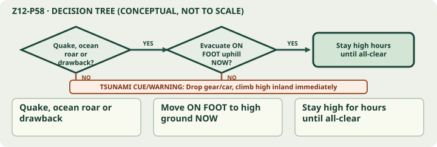

Z12-P58 · Extreme environments · New manuscript
Recognize natural tsunami warning signs and evacuate immediately to high ground
React within seconds to natural coastal tsunami cues without waiting for official sirens or texts.
When it applies · Earthquake-prone ocean coastlines, low estuaries, harbors and coastal beaches.
Equipment · Pre-checked local tsunami evacuation map, sturdy shoes and go-bag if staying on the coast.

Actions
- Know the three **NATURAL TSUNAMI WARNINGS**: (1) strong or long coastal ground shaking (Drop, Cover, Hold On until shaking stops), (2) a sudden loud ocean roar like a jet or freight train, or (3) sudden unusual ocean recession exposing seafloor or sudden surging wall of water.[X16]
- Evacuate **IMMEDIATELY ON FOOT** inland and uphill to marked high ground (generally >100 feet elevation or well inland per local zone maps)—do NOT wait for sirens, do NOT pack gear and do NOT drive into gridlocked coastal roads.[X16, T13]
- Stay on high ground for HOURS until official emergency managers issue a verified all-clear—tsunamis arrive as a series of destructive waves over many hours, and the first wave is often NOT the largest.[X16]
Failure recognition · Walking out onto a suddenly exposed dry seafloor to pick up flopping fish or returning to the beach twenty minutes after the first small surge.[X16]
Verify · Before staying or hiking on a coastal strip, locate the nearest marked Tsunami Evacuation Route and high-ground assembly point on foot.[X16, T13, ED]
Stop or change course · ANY natural tsunami cue or official Tsunami Warning overrides all schedules, vehicles and property—move immediately uphill and inland.[X16, T13]
Evidence and editorial notes
- T13 · FEMA / Ready.gov · Evacuation (current web edition)
- Section: Evacuation > Before, During, and After Evacuation · Conditions: Developing wildfire, flood, storm, or infrastructure emergency
Support: Identify multiple exit routes ahead of time, keep essential go-bags and fuel ready, leave promptly when authorities order evacuation, and do not return until officials declare the area safe.
Limitations: Late departure can trap groups behind road closures, smoke, or rising water. · Conflicting evidence: None; pairs with NWS-FLOOD and READY-WILDFIRE.
Editorial note: Establishes clear leave-early decision thresholds for multi-hazard scenarios. · Specialist reviewer: Emergency management
Primary source · checked 2026-11-24 - X16 · NWS · Tsunami Safety (current web edition)
- Section: Tsunami Safety > Natural Warning Signs and Immediate High-Ground Evacuation · Conditions: Earthquake-prone ocean coastlines and coastal estuaries
Support: Strong or long coastal ground shaking, a loud ocean roar or sudden unusual ocean recession are natural tsunami warnings—move immediately on foot inland and to high ground without waiting for official sirens, and stay away until officials issue an all-clear (multiple waves arrive over hours).
Limitations: A first receding or modest wave is often followed by much larger destructive surges. · Conflicting evidence: None; aligns with READY-TSUNAMI.
Editorial note: Establishes coastal tsunami immediate-evacuation stop conditions. · Specialist reviewer: Coastal emergency management and geology
Primary source · checked 2026-11-24
Source lineage · NWS tsunami safety and Ready.gov tsunamis; new manuscript · Classification · New manuscript.